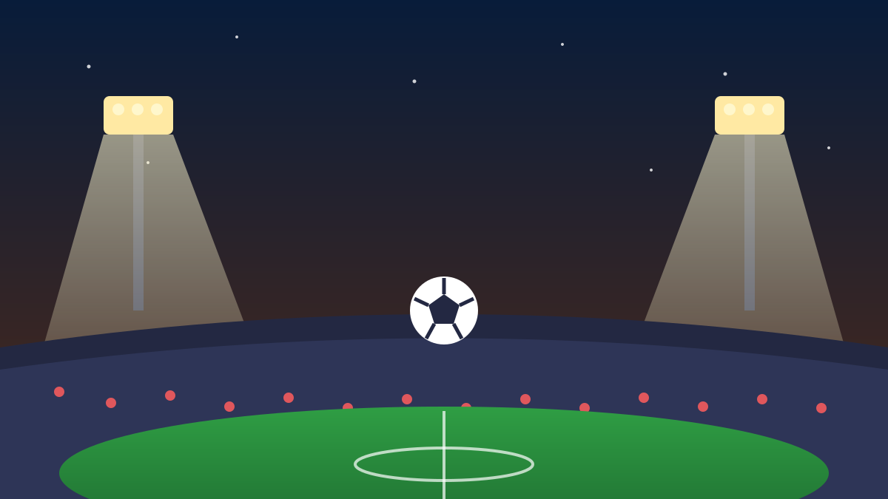

1 / 6

⚽ OLAHRAGA
Satu Gol Bikin Pulang: Garuda Tersingkir dari Perebutan Piala Dunia
Indonesia kalah tipis 0-1 dari Irak di Jeddah. Perjalanannya ke Piala Dunia 2026 resmi berakhir dini hari tadi. Geser buat full story-nya →
2 / 6
⚽
Gol tunggal Zidane Iqbal di menit 75
Indonesia harus mengakui keunggulan Irak 0-1 di Stadion King Abdullah Sports City, Jeddah, Minggu (11/10) dini hari WIB. Zidane Iqbal, pemain pengganti eks Manchester United, jadi penentu lewat sepakan keras kaki kiri yang gagal diantisipasi Maarten Paes.
Babak pertama berakhir 0-0 — peluang terbaik Garuda datang dari tembakan Kevin Diks di menit 65 yang masih bisa digagalkan kiper Irak.
3 / 6
📉
Dua kekalahan, nol poin, tersingkir
Ini kekalahan kedua beruntun Indonesia setelah tumbang 2-3 dari Arab Saudi di laga pembuka. Dengan 0 poin, Garuda dipastikan tersingkir dari Grup B putaran keempat Kualifikasi Piala Dunia 2026 zona Asia.
Irak dan Arab Saudi yang akan memperebutkan posisi juara grup untuk tiket langsung ke Piala Dunia 2026.
4 / 6
🎙️
Kluivert: "Kami tim yang jauh lebih baik"
Pelatih Patrick Kluivert kecewa berat: "Menurut saya, jika melihat pertandingan, kami jelas tim yang jauh lebih baik." Secara statistik Garuda unggul — 55% penguasaan bola dan 9 tembakan vs 7 milik Irak.
"Saya benar-benar bangga dengan para pemain yang menunjukkan hati dan keberanian mereka," lanjutnya. Satu momen kelengahan, mimpi pun buyar.
5 / 6
📊
Yang bikin nyesek: lini depan buntu lagi
Disiplin dan berani — tapi tumpul di sepertiga akhir lapangan. Itu masalah yang berulang: peluang dari Mauro Zijlstra dan Ole Romeny mentah di pertahanan Irak.
Di sisi lain, Irak tampil sabar dan disiplin, lalu menghukum lewat satu aksi individu. Sepak bola memang soal siapa yang cetak gol, bukan siapa yang main bagus.
6 / 6
🤔
Efeknya ke lo apa?
Nangis boleh, tapi jangan sampai kapok dukung Garuda — tim ini makin berani lawan raksasa Asia, dan umur pemainnya masih pada muda. Jalannya ke Piala Dunia selanjutnya terbuka lebar.
Yang bisa lo ambil: main bagus nggak cukup kalau finisnya loyo. Pelajaran yang valid banget, nggak cuma buat bola — tapi buat hidup juga.